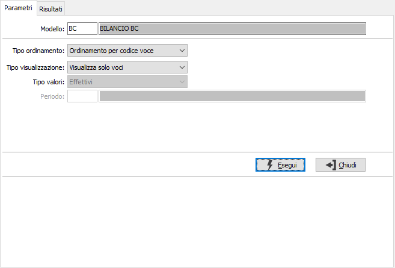
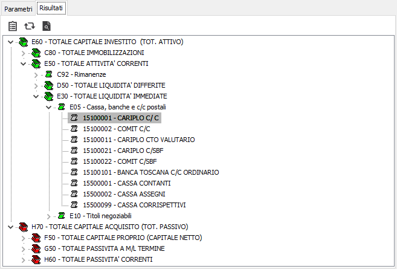

Visualizzazione voci di riclassificazione
Il programma consente di visualizzare in formato grafico la struttura delle voci di riclassificazione di un determinato modello, permettendo l'esplosione e la manutenzione dei singoli componenti della struttura.
Sulla linguetta Risultati, sono attivi i bottoni Stampa ed Anteprima sulla toolbar per effettuare la stampa dei dati selezionati.
La linguetta di richiesta parametri consente di specificare i criteri di selezione.

MODELLO: inserire il modello di riclassificazione da utilizzare per la selezione; il modello indica alla procedura le voci da utilizzare. Sul campo sono attive le funzioni di ricerca (F9) sulla tabella stessa.
TIPO ORDINAMENTO: definisce il criterio di ordinamento delle voci di riclassificazione: per codice voce o per ordine di stampa.
TIPO VISUALIZZAZIONE: definisce il criterio di visualizzazione delle voci di riclassificazione: visualizza solo le voci, visualizza voci e valori.
Nel caso si scelga la visualizzazione delle voci e dei valori saranno richiesti anche i successivi parametri:
TIPO VALORI: indicare quali valori si desidera visualizzare: i valori effettivi, quelli rettificati oppure quelli preventivi.
PERIODO: inserire il periodo relativo ai valori da visualizzare. Sul campo sono attive le funzioni di ricerca (F9) sulla tabella stessa.
La pressione del pulsante Esegui visualizza nella pagina Risultati l'esito della selezione.

I dati sono visualizzati con immagini e colori diversi per identificare le voci di subtotale, le voci singole, dell'attivo, del passivo o economiche ed i conti di riferimento. Agendo con il mouse sul segno "+" saranno visualizzate le voci o i conti di riferimento relativi alla voce principale.
Sulla barra superiore sono presenti dei tasti di utilità: il tasto "Apri" (F11) consente di accedere alla manutenzione dell'elemento selezionato, sia esso voce o conto; il tasto "Aggiorna" (F12) consente di aggiornare la visualizzazione; il tasto ricerca (F9) consente di ricercare un elemento nella struttura, anche se non visualizzato: è sufficiente digitare il codice o la descrizione o parte di essi.